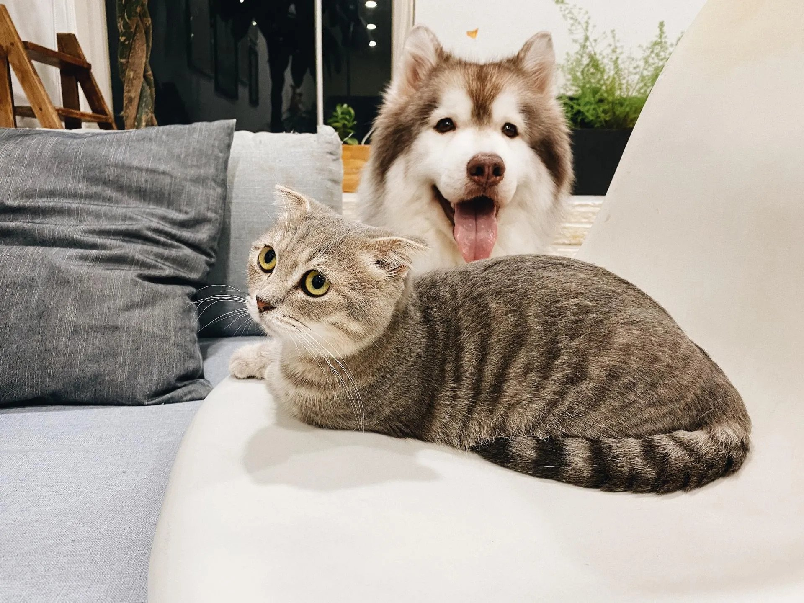

Coping with the loss of a pet is difficult. We understand how deeply it can affect you and your family. A small memorial service for your departed animal can be a healing and cathartic act, and we can help you give your beloved pet the dignified farewell and attention that he or she deserves.

Burial
We can help you find the ideal final resting place for your beloved pet in a nearby pet cemetery.
Cremation
Private
- Individual — or private — cremation is a process where only one pet is present in the cremation chamber, similar to the process used for human cremations. After cremation, we remove your pet's cremated remains from the chamber and return them to you in an urn of your choice.
Partitioned
- Partitioned cremation means that your pet shares space in the cremation chamber with other pets. Because each pet is placed in a designated area and clearly identified with a stainless steel ID tag, we're able to ensure that you'll receive the cremated remains of only your pet. The cremated remains will be returned to you in an urn of your choice.
Communal
- Communal cremation is for pet owners who do not wish to keep their pet's cremated remains, but would still like to care for their pet's remains in a dignified and loving way. In a communal cremation, multiple pets are cremated. The cremated remains are then spread on private land by one of our staff members.
Memorial Items
Prior to burial or cremation, we can create keepsakes for you to remember your pet for years to come. This includes ink paw prints, clay paw prints, or keepsakes that include locks of fur or feathers. Ask our staff for more details on what we offer.